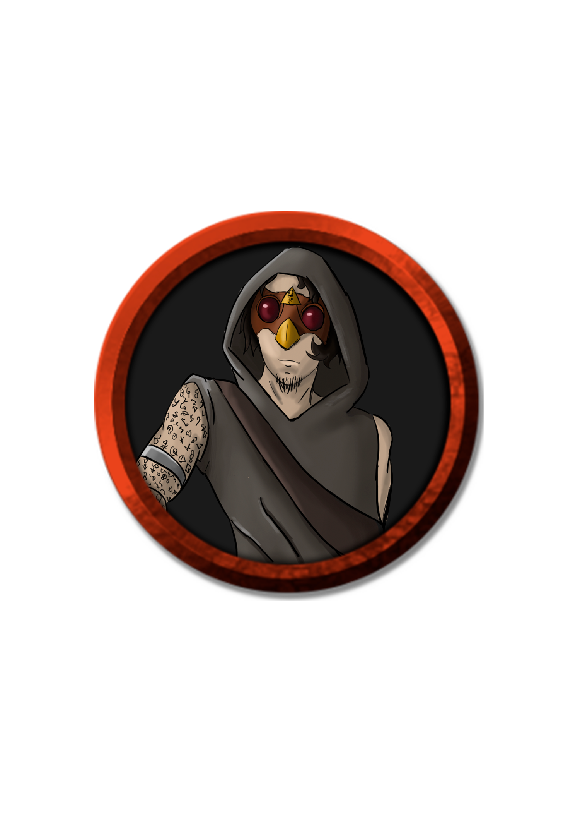
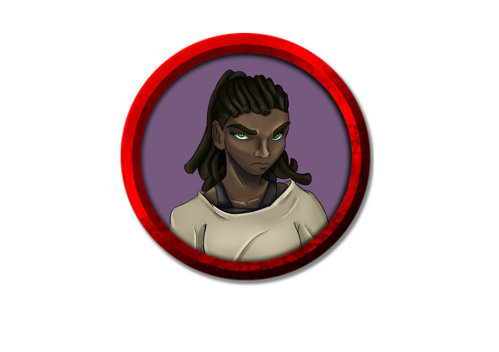
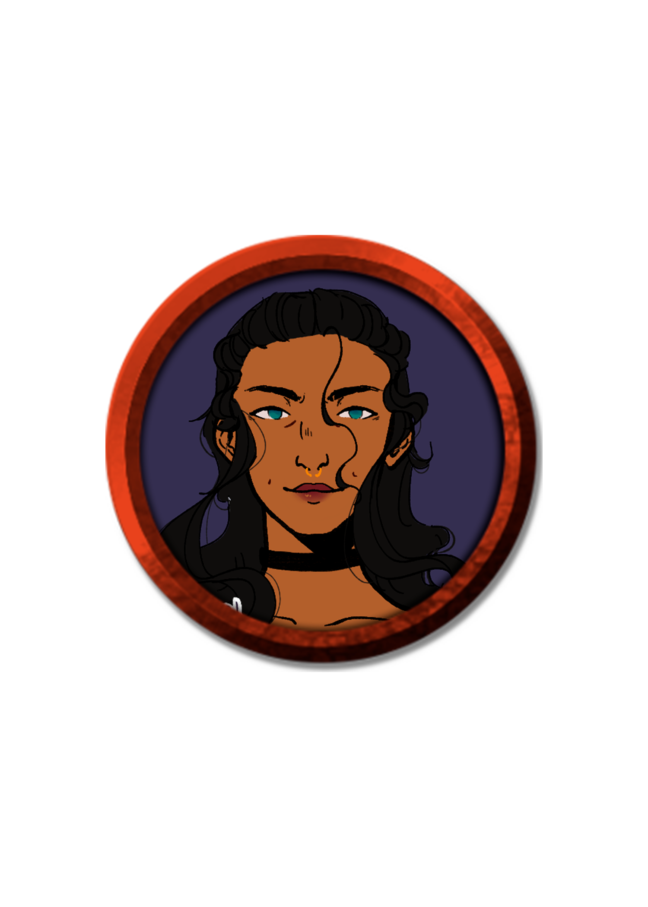
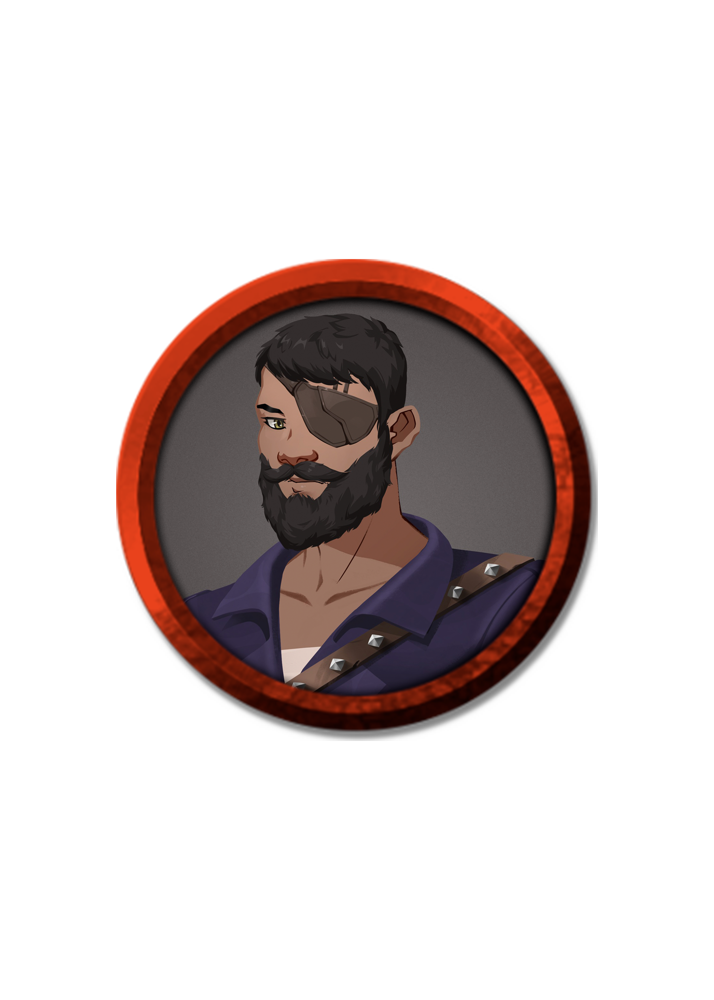

Ordo Realitas

Ex-militar de passado oculto, Bruno é um amigo de longa data de Verônica e atual líder da Ordem, tendo se tornado o pilar da organização após o desaparecimento da última líder.

A principal mente ocultista por trás da Ordem, Edgar também é um renomado ferreiro, sendo responsável pela criação de diversos armamentos para os agentes.

Dimitri é uma das principais figuras da Ordem, sendo responsável pela confecção de equipamentos e tecnologias para os Agentes.

Filha da antiga líder e de um antigo grande agente da Ordem, Verônica "V" Monteiro recebeu seu nome em homenagem a outra grande agente e, hoje, carrega em seu nome e lâmina o legado de todos aqueles que viveram e morreram pelos bem maior.
Aldeia da Foz de Sangue

Tálassa é só um título que acabou por substituir o verdadeiro nome da poderosa e impulsiva capitã da Legião dos Náufragos.

Mestre de Armas da Legião de Náufragos, Tirré é um homem sério que, após perder seu amado, passou a fazer o necessário para manter quem se importa a salvo.

Ex-capitão da Legião de Náufragos, Gael hoje vive pacíficamente protegendo e ajudando os moradores da Aldeia da Foz de Sangue.
Os Negri

De aparência bela e imponente, Ísis é a líder da grande Família Negri, sendo portadora de um poder raro e de uma mente poderosa.

Segunda filha de Ísis Negri, Kayla é uma mulher forte, ágil e gentil que busca incessantemente por sua irmã mais velha perdida.

Alice é a 3ª filha de Ísis Negri e, apesar de sua falta de atenção, é considerada uma das maiores mentes da família.